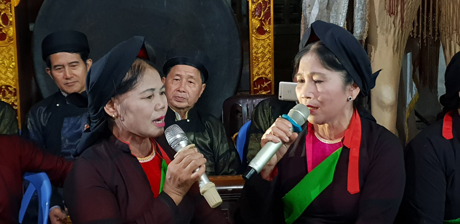
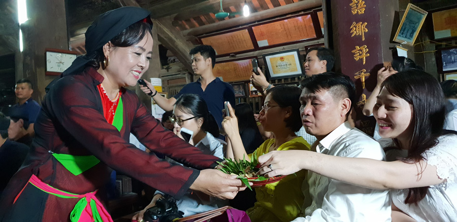
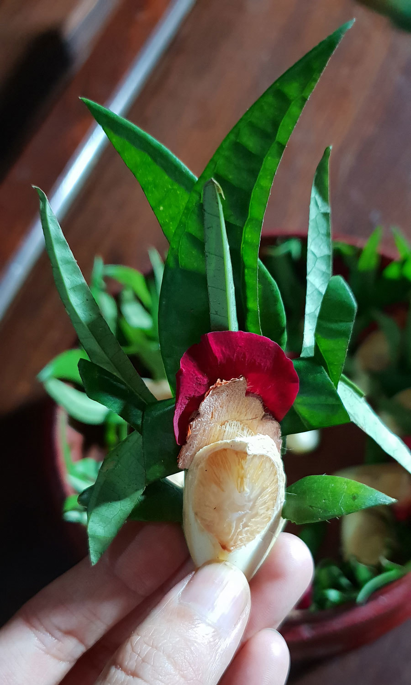
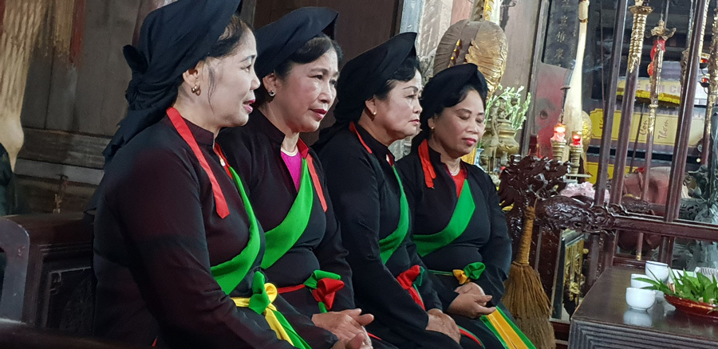

Dân ca Quan họ là sản phẩm của vùng Kinh Bắc xưa, bao gồm tỉnh Bắc Ninh ở bờ Nam sông Cầu và tỉnh Bắc Giang ở bờ Bắc Sông Cầu ngày nay. Trong tổng số 49 làng Quan họ cổ của vùng Kinh Bắc được UNESCO công nhận là “Di sản văn hóa phi vật thể” đại diện của nhân loại, Bắc Giang có 5 làng Quan họ cổ đều thuộc huyện Việt Yên.
Các nhà nghiên cứu đã khẳng định không gian quan họ ở bờ Bắc sông Cầu rất rộng lớn, còn lưu giữ nhiều giá trị của di sản văn hoá Quan họ đặc sắc của vùng Kinh Bắc. Ở những làng quê này, không biết tự bao giờ, Quan họ đã trở thành nếp sinh hoạt văn hóa trong đời sống thường ngày.

Trải qua bao thời gian, hát Quan họ vẫn giữ được những tinh hoa đặc trưng của mình. Đến nay, Bắc Giang vẫn còn lưu giữ được 200 làn điệu và thường được các liền anh, liền chị hát trong những dịp hội làng. Lề lối hát Quan họ rất quy củ, khuôn phép chặt chẽ, được chia thành 3 thể loại chính: hát đối đáp, hát canh và hát hội.
Hát đối đáp bao gồm đối đáp nam nữ, đối giọng và đối lời; hát canh chia làm 3 chặng: chặng đầu, chặng giữa và chặng cuối; hát hội thì có hai hình thức hát vui và hát thi. Ngoài 3 loại chính này còn có các loại khác như hát lễ thờ, hát cầu đảo, hát giải hạn, hát mừng, và hát kết chạ.
Theo các nghệ nhân, Quan họ mới ngày nay dễ hát, phóng khoáng, rộng rãi hơn và có nhạc đệm nên nghe có phần dễ đi vào lòng người. Hát Quan họ cổ rất khó, để hát được Quan họ cổ hay thì người hát phải thực sự đam mê, giọng phải “vang, rền, nền, nảy” và có chút tình trong đó.

Quan họ cổ chủ yếu là giọng La rằng và La hừ. Trong Quan họ cổ khó có thể đệm nhạc được mà nhạc đệm chính là sự giao âm giữa giọng của các liền anh, liền chị với nhau. Hơn nữa, hát Quan họ cổ phải theo lề lối bắt buộc cho nên cần phải thuộc nhiều bài.
Một canh hát đối đáp của Quan họ cổ thường là bắt đầu vào hát, rồi đôi bên quan họ phải hát đối với nhau. Bài hát lúc đầu là hát những câu chào hỏi, hát theo giọng La rằng, sau đó là đến hệ thống giọng vặt (giọng này chiếm phần lớn và là phần chính trong canh hát đối) và cuối cùng là hệ thống giọng giã (giã bạn) kết thúc một canh hát.
Để trở thành một cặp hát và hát được với nhau thì giọng của hai người phải như một, ăn khớp vào nhau. Không chỉ ở làng quan họ cổ, mà ở hầu khắp các làng, xã bên bờ Bắc sông Cầu thuộc tỉnh Bắc Giang, dân ca Quan họ đã ăn sâu vào tâm thức và trở thành món ăn tinh thần không thể thiếu đối với mỗi người dân.
Đặc biệt hơn, trong các lễ hội thì phần hội bao giờ cũng có các liền anh, liền chị ở các làng tổ chức hát Quan họ. Tiêu biểu như hội hát canh Quan họ trong chùa làng Thổ Hà ( xã Vân Hà, huyện Việt Yên).
Lễ hội này các anh hai, chị hai của làng duy trì gần hai chục năm nay. Lễ hội đã thu hút hàng trăm nghệ nhân từ khắp vùng về tham dự. Có thể khẳng định chắc chắn rằng đây là sân chơi Quan họ theo 10 đời có một không hai ở vùng Bắc sông Cầu.

Trai gái các làng Quan họ thường tụ tập thành từng bọn (từ cổ, chỉ một nhóm người) để cùng nhau hát. Một bọn Quan họ thường là những người trong một làng với nhau, với ý là để đối đáp với làng khác. Gặp nhau, người Quan họ dùng những lời xưng hô thật nhún nhường, lịch sự. Bên nào cũng vui vì gặp gỡ, cũng mong được học lấy đôi lối đôi câu. Những bọn Quan họ gặp nhau, thường là hát với nhau thâu đêm suốt sáng ở nhà chứa (nhà ông trùm của một bọn quan họ), và nghỉ lại ở nhà quan họ bạn của mình. Đó là tục ngủ bọn!
Theo các nghệ nhân Quan họ kể lại, quan họ xưa có còn có hình thức hát Quan họ trùm đầu. Đó là vào những đêm trăng sáng những chàng trai dùng khăn đen trùm lên đầu để mọi người không phát hiện ra, dời chỗ ngủ của “bọn” mình sang chỗ ngủ của “bọn” con gái cất tiếng hát gọi bạn. Các cô gái nằm trong nhà nghe tiếng hát gọi bạn cũng trùm lên đầu mình khăn đen, kéo nhau ra hè hát đối lại. Họ hát những bài hát Quan họ nhưng không theo giọng lề lối, mà chủ yếu là theo tình cảm muốn bày tỏ với người bạn tình, “xuất khẩu thành văn”.

Để giữ gìn và phát huy các giá trị văn hoá truyền thống của Quan họ, huyện Việt Yên đã thành lập 25 CLB hát Quan họ. Hàng năm, huyện đều tổ chức liên hoan hát Quan họ, thu hút hàng trăm nghệ nhân và liền anh, liền chị đến từ 40 làng, CLB Quan họ trong, ngoài tỉnh tham dự.
Nhằm thực hiện cam kết với UNESCO trong bảo tồn và phát triển Dân ca Quan họ, hai tỉnh Bắc Ninh và Bắc Giang đã triển khai nhiều giải pháp, trong đó, có việc phục dựng lại các nhà chứa.
Hiện nay, tỉnh Bắc Giang tập trung khôi phục, bảo tồn 5 làng Quan họ cổ đã được công nhận và 13 làng đã được xác định thêm từ năm 2006, phục dựng lại toàn bộ hình thức hát đối đáp cổ truyền ở các làng Quan họ.
Ngành văn hóa Bắc Giang phối hợp các địa phương xây dựng một số tụ điểm hát quan họ ở các làng Thổ Hà, Trung Đồng, Hữu Nghi, Nội Ninh, Giá Sơn, Sen Hồ cùng ở huyện Việt Yên; tiếp tục đưa Quan họ trở về cộng đồng các làng, gắn với không gian sinh hoạt văn hoá truyền thống, với môi trường đã sản sinh và nuôi dưỡng di sản văn hoá này trong lịch sử.
Tính Lê